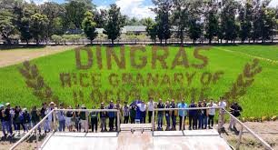
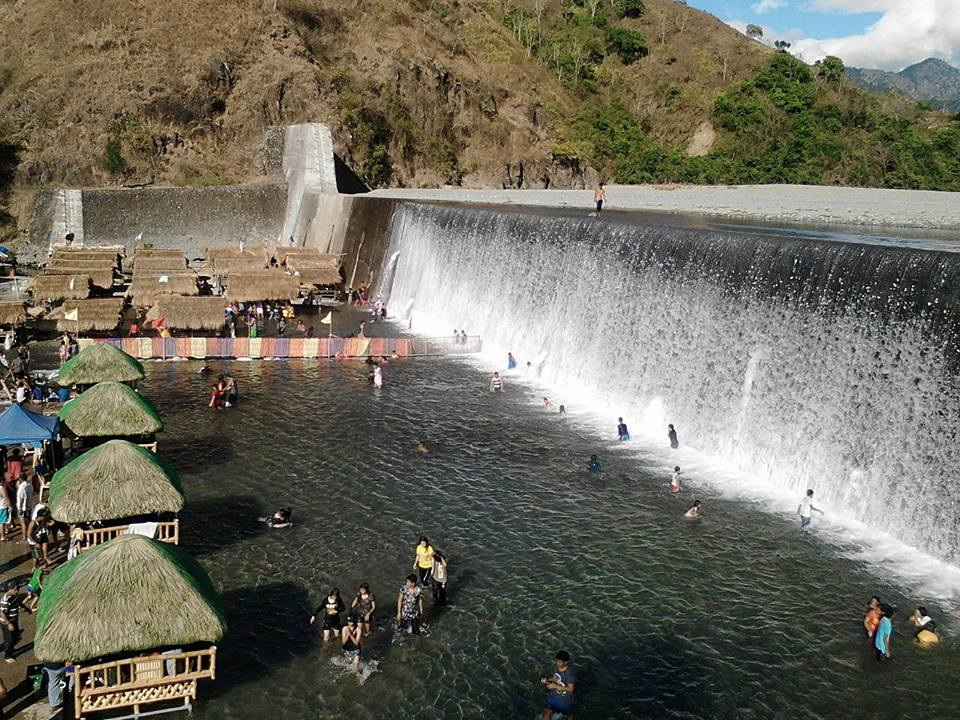
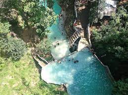
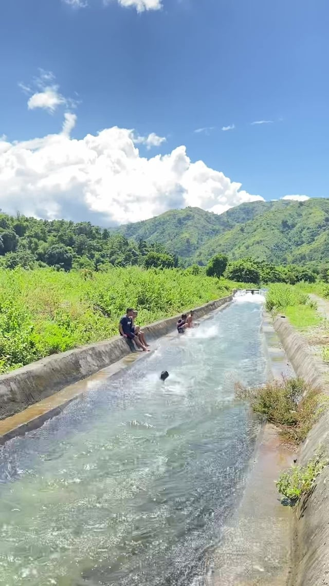

Dingras started as a visita of Batac and became an independent parish by the Augustinians. Father Bartolome Conrado became the first parish priest in 1598.It was reinstated as a visita in 1603 and back as a parish in 1605. The church was destroyed by earthquake in 1619, reconstructed before a fire in 1838, and lightning in 1853. Another church, largely known as the ruins of the Catholic Church of Dingras, was built by Augustinian friar Damaso Vieytez. It was restored and remodeled by Father Ricardo Deza with the help of Mayor Camilo Millan from 1879 to 1893. It was ruined by fire and earthquake in 1913.Now, the famous ruins of Dingras is reconstructed from its present site and now used as church building but on 2022 Luzon earthquake (Aftershock), The Church Sustained Damage On The Back Which Left The Back Area Damaged & The Church Decided To Close The Church For Re-Building The Back.
Balay Dingras is a town hall in Municipality of Dingras, Ilocos Norte, Ilocos. Balay Dingras is situated nearby to the town hall Dingras Municipal Hall, as well as near Mothering Center.
The term "Dingras Plaza" refers to the public town plaza in Dingras, Ilocos Norte, located near the church and municipal building. It is a central public space that has historically served as the heart of the town. Recent events, such as the "Kadiwa ng Pangulo" market, have also been held there, highlighting its role as a community gathering spot.

Dingras, Ilocos Norte, is known as the "rice granary" of the province due to its vast rice fields and agricultural productivity. This designation is supported by the Padsan and Bonga rivers, which provide irrigation, particularly with the help of the Dingras River Irrigation System (RIS), and a wide, fertile terrain ideal for farming.

It is in Barangay San Marcelino, Municipality of Dingras, Ilocos Norte. There is an access road to reach the dam. Tourists can see the cold water falling from Madongan River. A short hike gives a view of the mountain ranges around the area.

PIKKAN FALLS MOUNTAIN RESORT, BRGY. CAPASAN, DINGRAS, ILOCOS NORTE Plunge into the refreshing cold waters o

Water irrigation in Dingras, Ilocos Norte, is primarily served by the Dingras River Irrigation System (RIS), which utilizes the Bonga River as its water source after the 2017 construction of the Dingras Diversion Dam, ensuring stable, year-round water supply for rice and high-value crops. The RIS, managed by the National Irrigation Administration (NIA), also supports the indigenous Zanjera Danum system, a network of ditches and laterals with strong social organization for maintenance and water allocation.